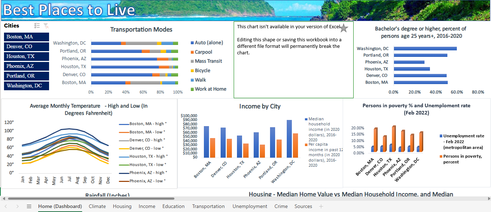

PORTFOLIO >DATA ANALYSIS & DATA SCIENCE
What Are the Best Cities to Live In?
This is a dashboard displaying key information on notable US cities, at a glance. The link to download the Excel workbook is at the bottom.

You can view quick stats on transportation, income, weather, education, and crime for each city. I figured it would be interesting to gather data and see if I can unearth some information.
I imported data from websites such as census.gov, weatherspark.com, fbi.gov, etc. and created a data model to link the data together using Power Query. I then visualized them in their own seperate sheets, before creating a home page that incorporates each major visual (with a slicer so that you can select each city). The workbook uses macros as a way to navigate back to the home page as well.